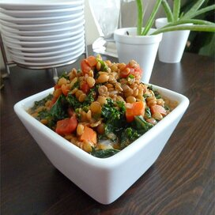

Lentils

Ingredients
- lentils
- tomatoe paste
- garlic
- cherry tomatoes
- white wine viegar
- onions
- olive oil
Directions
- oil at simmer
- put in garlic, cherrry tomatoes and onions
- cook down
- toss in vinegar and bring to quick boil
- add tomatoes paste, brothe, and lentils and let cook for 30 minutes